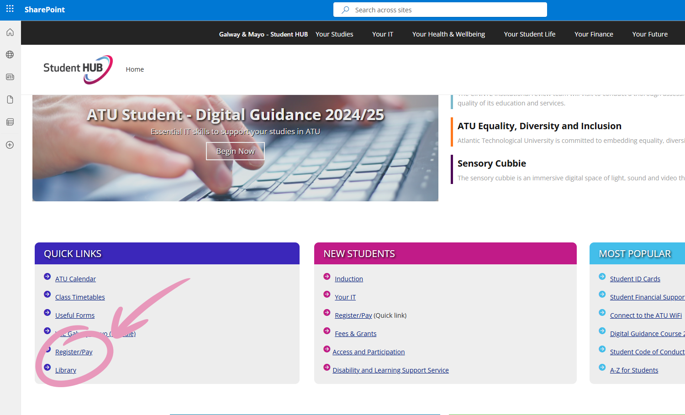
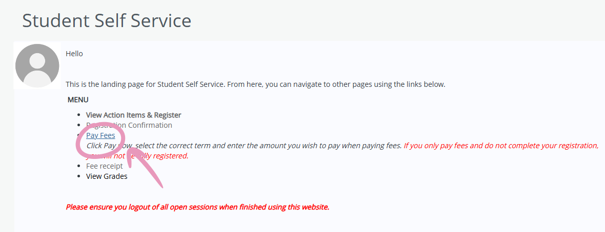

Not sure how to pay your college fees? Don’t worry — we’ll walk you through it step-by-step!
To pay your fees, all you need to do is access the Student Self service profile. You can easily find it by going to the ATU Student Hub and clicking here:

In the Student Self service profile click pay fees.

From here you can select the academic year you wish to pay your fees for. Don't worry if you can't pay all your fees straight away. You can pay your fees in two equal installments or set up a payment plan by emailing feecollection.galwaymayo@atu.ie
International students must pay all their fees in advance.
If you don't pay any of the fees you will lose access to your moodle, library, and exam results. You can regain access by paying a portion of these fees.